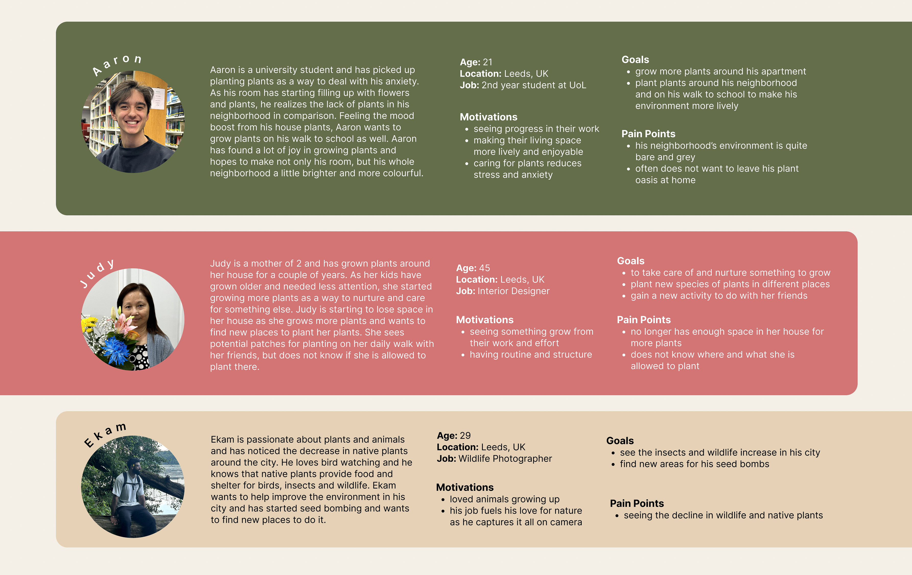
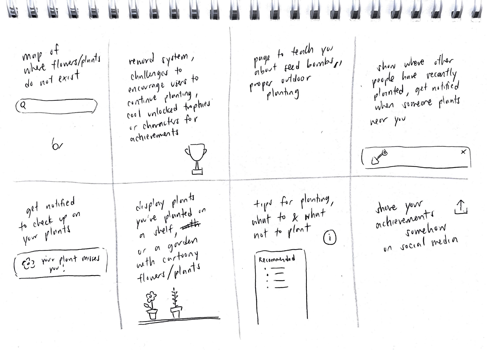

an outdoor planting mobile app for plant enthusiasts
Project Type: UI/UX, Website Design
Course: Design Application: Print and Screen
Timeline: Oct - Dec 2023
Tools: Figma, Illustrator
Project Overview
For the final project of my main design module at the University of Leeds, I was tasked to create a physical folded interactive A2 print design that communicates a journey as well as an app that acts as a niche online travel guide through Leeds. My paper prototype was a water lily that represented my journey through university. My app was designed with the idea of growth in mind. Many existing mobile applications are either plant identifiers, plant care assistants, or community boards for plant lovers. Instead of an app that shows you where plants already exist, I wanted to create an app that focused on areas that lacked them and where plant lovers could plant outside.
There are spaces in Leeds that lack plants and flowers and there are plant enthusiasts that want to plant outdoors.
I designed an app that shows you areas in Leeds that lack plants and where plant enthusiasts are able to grow new flowers. My app also gamifies the experience by presenting challenges and rewards so that plant lovers stay motivated to keep planting.
For my user research, I interviewed various students and adults about their needs and challenges they face as plant enthusiasts. From the information I gathered, I was able to create three user personas that guided the creation of my app.
Crazy 8s Brainstorming
In the ideation phase, I rapidly brainstormed various possible app features through the Crazy 8s brainstorming technique.
User Tasks
Through my user personas as well as my Crazy 8s brainstorm, I developed a synthesized list of user tasks using the MoSCoW method for prioritization.
MUST INCLUDE:
SHOULD INCLUDE:
COULD INCLUDE
Low-fidelity Wireframe Sketches
After sorting my app feature ideas by priority, I began sketching out possible screens for my mobile application.
I created a visual design system in order to maintain consistency throughout my app prototype. I wanted to use earthy tones in order to emulate plants, which led me to use green and brown as my main colours.

My app was designed and prototyped on Figma and here is a short demo of my first iteration of the app with a focus on its interactions.